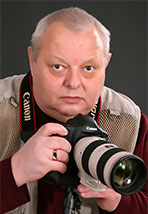
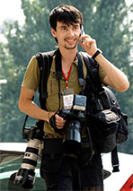
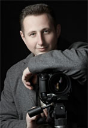

Александр Витков
Заслуженный журналист Украины, фотожурналистский стаж работы более 35 лет.
Член Национального союза журналистов Украины, член правления Донецкой
областной организации НСЖУ, председатель Донецкой областной фотосекции
НСЖУ. Лауреат и призер многочисленных республиканских, всесоюзных и
международных фотоконкурсов. Сотрудничал с информационными агентствами
«ИТАР-ТАСС», «Укринформ». Печатался во всех крупных изданиях бывшего
Советского Союза и за рубежом.

Александр Загибалов
Фотожурналист, со стажем работы 9 лет, член Национального союза журналистов
Украины, член Союза фотохудожников Украины, Союза спортивных журналистов
Украины, лауреат и призер многочисленных фотовыставок в Венгерской
Народной Республике, Польше, в Киеве и Москве. Признан лучшим
фоторепортером 2012 года в Донецкой области.

Алексей Пацюк
Фотохудожник, дизайнер. Стаж работы 15 лет. Участник многочисленных
фотовыставок и фотоконкурсов. Сотрудничает со СМИ, а также имеет
многолетний опыт в сфере рекламы.
Украина, 83050, г.Донецк
ул.Шекспира,11
тел.+38(095) 405-56-48
тел.+38(050) 946-41-95
тел.+38(062) 335-79-94
e-mail: fotoshkoladn@gmail.com